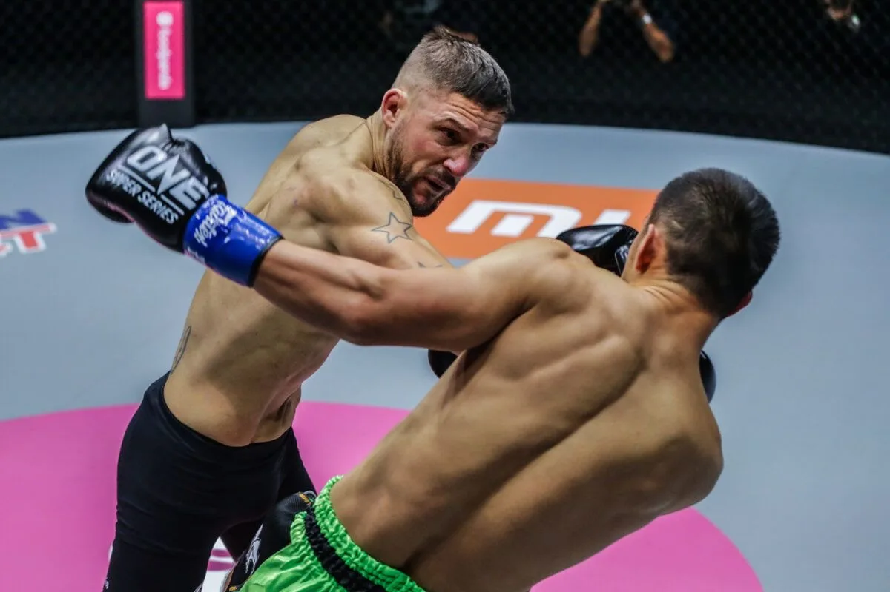
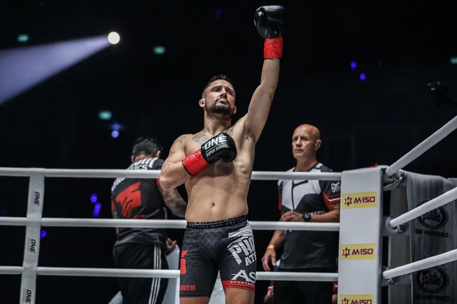
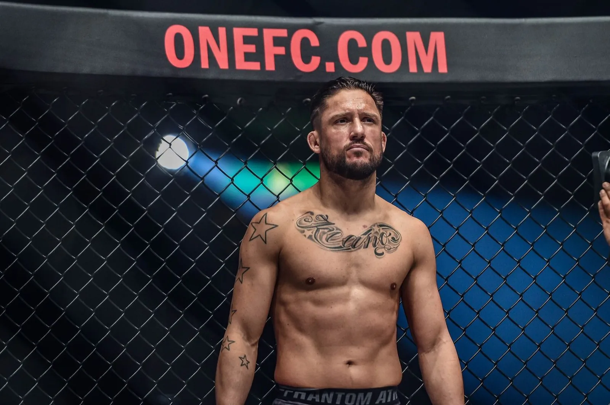
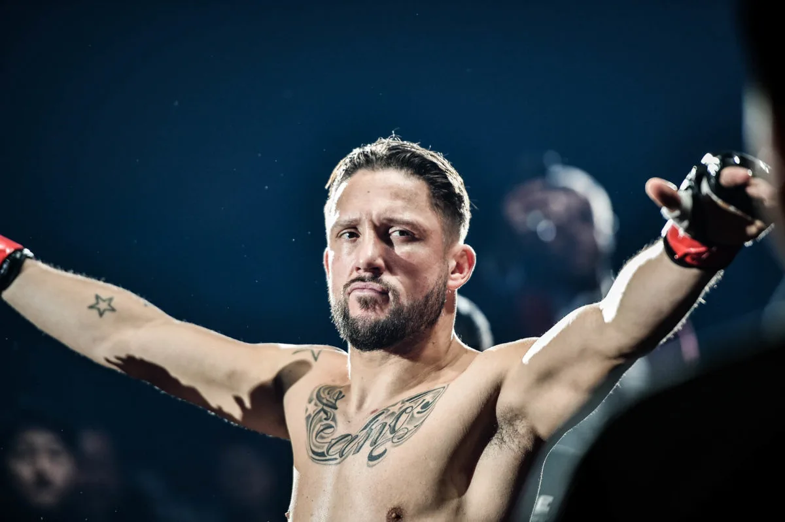
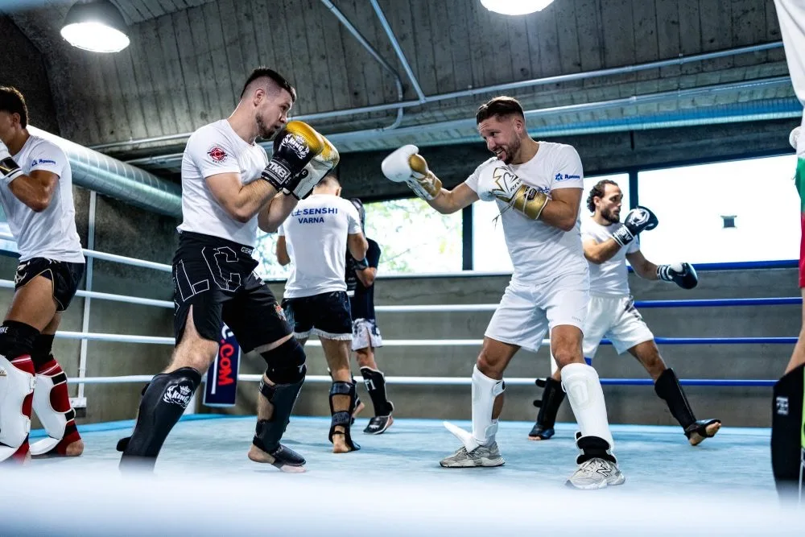
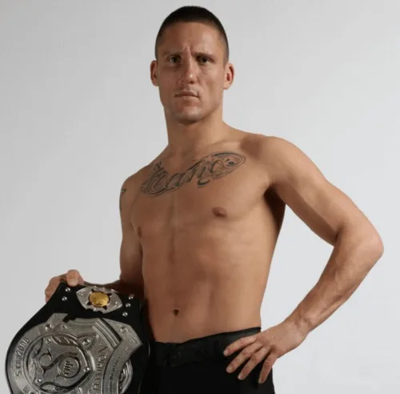

Geboren in Den Bosch, 9 november 1982
Van Ling Ho Gym naar de wereldtop
Over tweede kansen
Andy begint op zijn zevende met kickboksen bij Ling Ho Gym in 's-Hertogenbosch. Na een jaar trainen vecht hij zijn eerste partij. Hij wordt ongeslagen Nederlands kampioen, daarna Benelux- en Europees kampioen, en stapt op zijn zestiende het profcircuit in.
In Japan maakt hij in 2002 furore in het shootboxen. Dat levert in 2003 zijn eerste kans bij K-1 op, maar een verlies en een nipte winst zetten hem een jaar buitenspel. Hij wint in 2004 opnieuw de Shootboxing Grand Prix en pakt in 2005 zijn eerste K-1 World MAX-titel. In 2007 doet hij het nog een keer.
Daarna volgen een profzege in het boksen tegen de nummer twee van Georgië en vijf MMA-partijen tegen de wereldtop. Op 19 maart 2011 opent hij zijn eigen school in sociaal-cultureel centrum De Schans in Maaspoort. Na zijn laatste partij bij ONE Championship, op 15 oktober 2021, staat hij fulltime in de zaal.
Wat leden opvalt: hij deelt zijn visie op de vechtsport en zegt er altijd bij dat het zijn visie is, niet dé waarheid. Bij elke oefening legt hij uit wat het doel is en waarom je hem traint.
- 1989Eerste training bij Ling Ho Gym
Zeven jaar oud, in Den Bosch. Een jaar later zijn eerste partij.
- 1998Prof op zijn zestiende
Nederlands, Benelux- en Europees kampioen; als tiener drie wereldtitels bij drie bonden tegelijk.
- 2002Shootboxing S-Cup, Japan
De eerste van vier S-Cup-overwinningen (2002, 2004, 2008, 2012).
- 2005K-1 World MAX wereldkampioen
Winst in de finale van het grootste kickbokstoernooi ter wereld.
- 2007Tweede K-1 World MAX-titel
Met overwinningen op Gago Drago, Albert Kraus en Masato.
- 2011Eigen school in Maaspoort
19 maart 2011: Kickboxing University opent in De Schans.
- 2012It's Showtime 70kg MAX wereldkampioen
Plus de vierde S-Cup.
- 2021Afscheid van de ring
Laatste partij bij ONE Championship op 15 oktober 2021. Sindsdien fulltime coach, online en in de zaal.
Vijftien jaar wereldtop







Binnen en buiten de ring voor je klaar
Kickboxing University is meer dan een lespakket. Andy en de trainers denken mee, ook buiten de zaal. Respect en persoonlijke groei staan voorop, en er wordt veel gelachen.
- Alle leeftijden en niveaus, in aparte uren
- Shirtsysteem van wit tot zwart
- Internationaal netwerk: seminars, gala's, affiliates
- Online lesprogramma voor thuis of je eigen gym